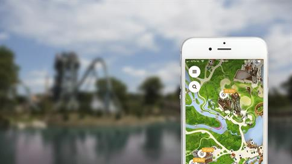

De Efteling is veel meer dan een gewoon attractiepark. Het is een wereld vol sprookjes, spannende avonturen en betoverende belevingen voor jong en oud.
Of je nu houdt van rust en verwondering of juist van snelheid en sensatie — in de Efteling vind je het allemaal.
Benieuwd hoe dat eruitziet? Bekijk hieronder een selectie van video’s die je alvast meenemen in de magie van de Efteling!
Handige informatie
Een dagje naar de Efteling begint met een goede voorbereiding. Of je nu voor het eerst komt of al jaren fan bent: hier vind je alle praktische informatie die je nodig hebt voor een zorgeloos en magisch bezoek.
Van openingstijden en routebeschrijvingen tot actuele entreeprijzen — wij zetten alles overzichtelijk voor je op een rij.
Openingstijden
De Efteling is het hele jaar door geopend, met ruime openingstijden die per seizoen kunnen verschillen. In de zomermaanden geniet je extra lang van alle magie, terwijl in de winter het park sfeervol verlicht is voor een warme, betoverende ervaring.
Over het algemeen zijn de openingstijden als volgt:
Voorjaar en najaar: meestal geopend van 10:00 uur tot 18:00 uur.
Zomermaanden: vaak verruimde openingstijden, bijvoorbeeld van 10:00 uur tot 20:00 uur of later.
Winterperiode (Winter Efteling): doorgaans geopend van 11:00 uur tot 18:00 uur.
Kijk voor de meest actuele openingstijden altijd even op de officiële kalender van de Efteling.
Entreeprijzen
De entreeprijzen van de Efteling variëren afhankelijk van de dag en het seizoen. Hoe eerder je je ticket online boekt, hoe voordeliger de prijs vaak is!
Daarnaast zijn er speciale tarieven voor kinderen, senioren en abonnementhouders.
Classic abonnementen vanaf: €20,- per maand *of €225,- per jaar
Plus abonnementen vanaf: €25,- per maand *of €275,- per jaar
Premuim abonnementen vanaf: €35,- per maand *of €390,- per jaar
Voor de actuele prijzen en aanbiedingen kijk je het beste op de officiële website van de Efteling.
Onderhoud aan attracties
Net als in elk attractiepark wordt er in de Efteling af en toe onderhoud gepleegd aan attracties, zodat alles veilig en in topconditie blijft.
Wil je weten wat er open is tijdens jouw bezoek? De gratis Efteling-app geeft je alle actuele informatie over attracties, wachttijden, shows en restaurants – zo haal je alles uit je dag in het park!

Route
De Efteling ligt centraal in Nederland, in Kaatsheuvel, en is makkelijk te bereiken met zowel de auto als het openbaar vervoer.
Kom je met de auto?
Volg dan de borden richting 'Efteling' vanaf de snelwegen A59 en N261.
Reis je met het ov?
Dan kun je vanaf stations in Tilburg, ’s-Hertogenbosch of Breda eenvoudig met de bus naar het park reizen.